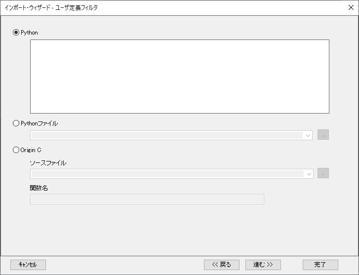

インポートウィザード、ユーザ定義フィルタページ (ユーザ定義)
ImpWiz-UserFilterPage
このページを使用して、PythonコードまたはOriginCファイルを指定してデータファイルをインポートします。Pythonを選択した場合、コードは直接入力または外部Pythonファイルへのリンクを介して追加できます。
- 
ユーザ定義フィルタオプション
| Pythonコード |
直接Pythonコードをボックスに入力してインポートを実行します。Python in Originをご覧ください。
|
| Pythonファイル |
データをインポートするために実行したいPythonファイルのパスを入力します。以下を指定できます。
- 絶対ファイルパス
- ユーザーファイルフォルダの相対ファイルパス
- ファイルがユーザーファイルフォルダにある場合は、ファイル名だけです。
|
| Origin C |
- ソースファイル
- OriginCのソースファイルのパスを入力します。
- Origin Cのファイルはデフォルトで、OriginをインストールしたフォルダのOrigin Cサブフォルダの下に置かれます。 ただし、d:\myfiles\myfunctionのように、指定したパスを設定することができます。 ただし、他の人とカスタム関数やインポートフィルタを共有している場合、これはお勧めできません。
- 2つの関連したファイルのパス（<User Files Folder> と )はドロップダウンリストから利用できファイルパスを簡単に入力できます。
- 関数名
- ターゲットウィンドウでデータを処理/インポートするのに使う(Origin Cソースファイル内にある)関数の名前を指定します。
|